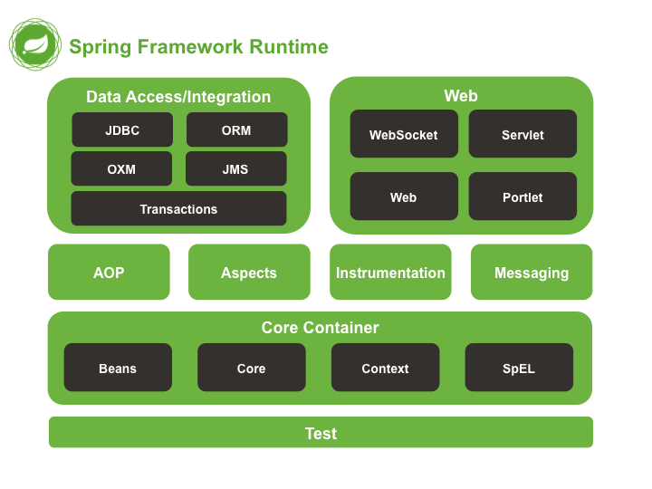

This is a series of articls.
focuses on AOP (面向方面编程) and IOC (控制反转容器). It also introduces the 7 modules of Spring, but I DO NOT understand what are they axactly mean. The IOC, in my opinion: 1) use components that implemented some interfaces to provide service; 2) load the concrete components defined in xml configuration file. I cannot see AOP…
focues on AOP and Hibernate.

Core container Includes spring-core, spring-beans,
spring-context, spring-expression.
spring-core and spring-beans are fundamental parts. Key:
BeanFactory.
spring-context is about internationalization, event
propagation, resource loading, transparent creation of contexts
by Servelet container, etc. Key: ApplicationContext.
spring-expression provides Expression Language for
quering and manipulating an object graph at runtime.
spring-aop, decouple code. Incorporate behavioral information
into the code.
spring-aspects works with AspectJ.
spring-instrument provides classloader implementations and
class instrumentation support.
spring-messaging module, messaging-based applications.
spring-jdbc JDBC
spring-tx programmatic and declarative transaction
spring-orm object-relational mapping (JPA, JDO, Hibernate)
spring-oxm Object/XML mapping (JAXB, Castor, XMLBeans, JiBX
and XStream)
spring-jms Java Messaging Service
spring-web web-oriented integration (multipart file upload
functionality, initialization of IoC container using Servlet
listener and web-oriented application context). Remoteing
support.
spring-webmvc Web-Servlet module contains MVC for web
applications.
spring-webmvc-portlet MVC in a Portlet environment.
spring-test supports unit testing and integration testing
with JUnit or TestNG. Loading of ApplicationContext and
caching of those contexts. Provides mock objects.
个人理解的Bean,其实就是一个实例化过程的包装器.
$ 来表述,比如在 com.exmpale 包下的
Foo 类中有一个静态内部类 Bar,Bean中对其引用时, XML里的
class 属性应该为 com.example.Foo$Bar.
<bean id="clientService" class="examples.ClientService" factory-method="createInstance"/>
<!-- the factory bean, which contains a method called createInstance() --> <bean id="serviceLocator" class="examples.DefaultServiceLocator"> <!-- inject any dependencies required by this locator bean --> </bean> <!-- the bean to be created via the factory bean --> <bean id="clientService" factory-bean="serviceLocator" factory-method="createClientServiceInstance"/>
依赖注入,添加对象之间的依赖关系
<beans> <bean id="foo" class="x.y.Foo"> <constructor-arg ref="bar"/> <constructor-arg ref="baz"/> </bean> <bean id="bar" class="x.y.Bar"/> <bean id="baz" class="x.y.Baz"/> </beans>
简单类型初始化参数
<!--说明参数类型--> <bean id="exampleBean" class="examples.ExampleBean"> <constructor-arg type="int" value="7500000"/> <constructor-arg type="java.lang.String" value="42"/> </bean> <!--说明参数次序--> <bean id="exampleBean" class="examples.ExampleBean"> <constructor-arg index=0 value="7500000"/> <constructor-arg index=1 value="42"/> </bean> <!--说明参数名字--> <bean id="exampleBean" class="examples.ExampleBean"> <constructor-arg name="years" value="7500000"/> <constructor-arg name="ultimateAnswer" value="42"/> </bean>
Debug flag, 在构造函数上加上
@ConstructorProperties({"arg1Name", "arg2Name"}).
<bean id="exampleBean" class="examples.ExampleBean"> <!-- setter injection using the nested ref element --> <property name="beanOne"> <ref bean="anotherExampleBean"/> </property> <!-- setter injection using the neater ref attribute --> <property name="beanTwo" ref="yetAnotherBean"/> <property name="integerProperty" value="1"/> </bean>
public class ExampleBean { private AnotherBean beanOne; private YetAnotherBean beanTwo; private int i; public void setBeanOne(AnotherBean beanOne) { this.beanOne = beanOne; } public void setBeanTwo(YetAnotherBean beanTwo) { this.beanTwo = beanTwo; } public void setIntegerProperty(int i) { this.i = i; } }
<beans xmlns="http://www.springframework.org/schema/beans" xmlns:xsi="http://www.w3.org/2001/XMLSchema-instance" xmlns:p="http://www.springframework.org/schema/p" xsi:schemaLocation="http://www.springframework.org/schema/beans http://www.springframework.org/schema/beans/spring-beans.xsd"> <bean id="myDataSource" class="org.apache.commons.dbcp.BasicDataSource" destroy-method="close" p:driverClassName="com.mysql.jdbc.Driver" p:url="jdbc:mysql://localhost:3306/mydb" p:username="root" p:password="masterkaoli"/> </beans>
<bean id="mappings" class="org.springframework.beans.factory.config.PropertyPlaceholderConfigurer"> <!-- typed as a java.util.Properties --> <property name="properties"> <value> jdbc.driver.className=com.mysql.jdbc.Driver jdbc.url=jdbc:mysql://localhost:3306/mydb </value> </property> </bean>
使用 PropertyEditor 将 <value/> 中的文本转换成
java.util.Properties.
<!-- in the parent context --> <bean id="accountService" class="com.foo.SimpleAccountService"> <!-- insert dependencies as required as here --> </bean> <!-- in the child (descendant) context --> <bean id="accountService" <!-- bean name is the same as the parent bean --> class="org.springframework.aop.framework.ProxyFactoryBean"> <property name="target"> <ref parent="accountService"/> <!-- notice how we refer to the parent bean --> </property> <!-- insert other configuration and dependencies as required here --> </bean>
*